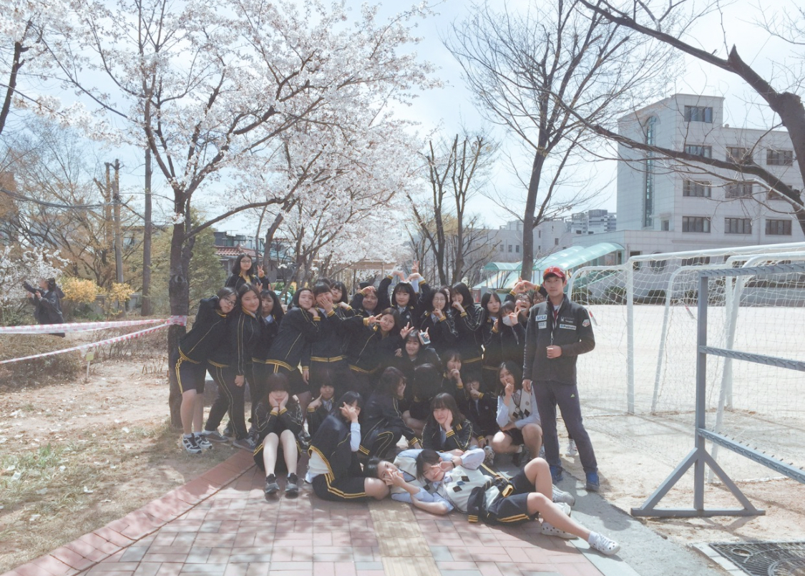
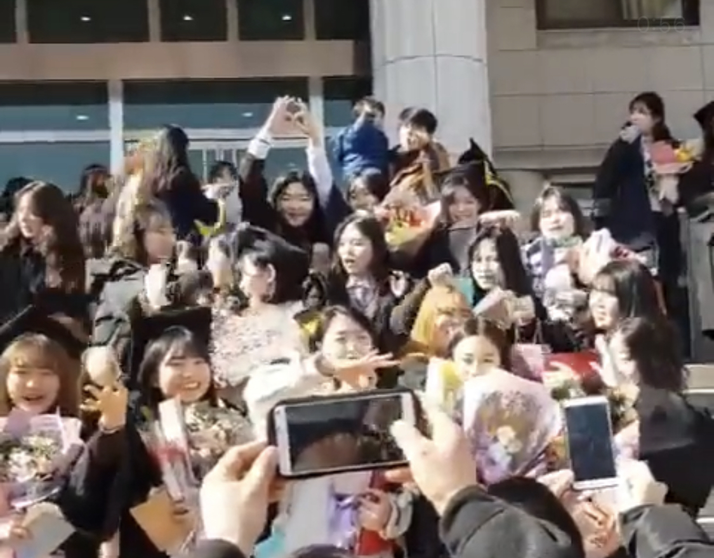
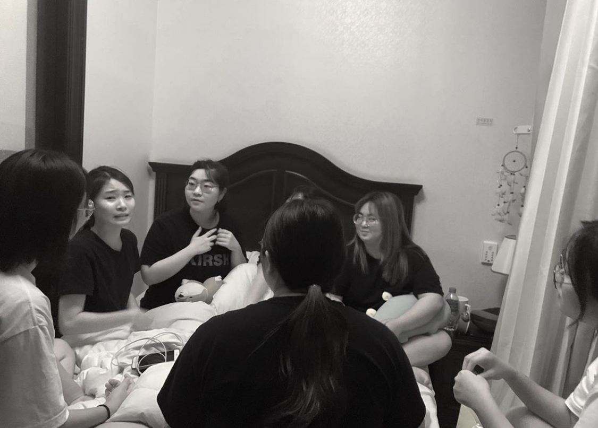

2016년 2월의 첫만남. 그 때부터 생겨난 수상한 조짐. 그것은 헬팔이 곧 탄생할 것이라는 어마무시한 신호였다. 그동안 해성여고 1학년 8반을 거쳐간 수많은 사람들이 있었지만, 이번은 달랐다. 전무후무한 우정의 역사를 써내려간 그들. 해성여자고등학교의 선생님들과 전교생은 이들의 끈끈함에 경악했다. 그들은 모두가 되고 싶어하는 대상이자 유행의 선구자였으며, 트렌디함의 극치였다. 이들을 빙자한 수많은 모임이 생겨났다. 하지만 지금까지 살아남은 것은 이 "헬팔"뿐. 이 정도면 말 다한 거 아닌가?
이 사람들은 WlS이다. 레전설이다.
함께 맞이한 해성에서의 첫 봄 함께 맞이한 해성에서의 마지막 겨울 매달의 모임을 통해 앞으로의 미래에 대해 얘기한다.
돌아가기